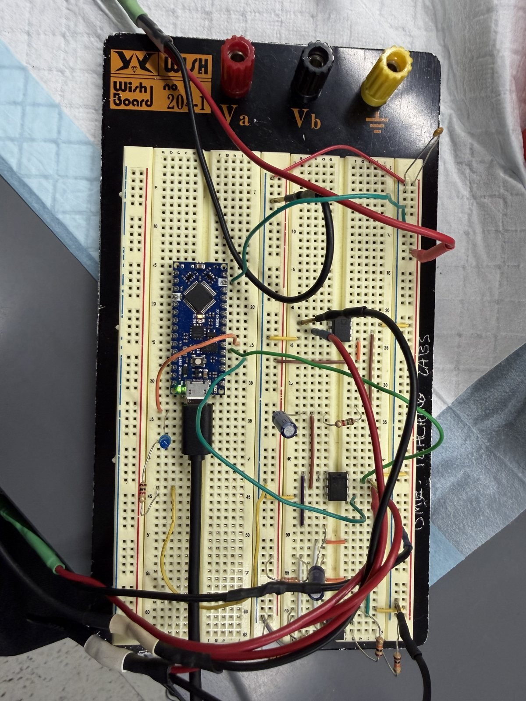
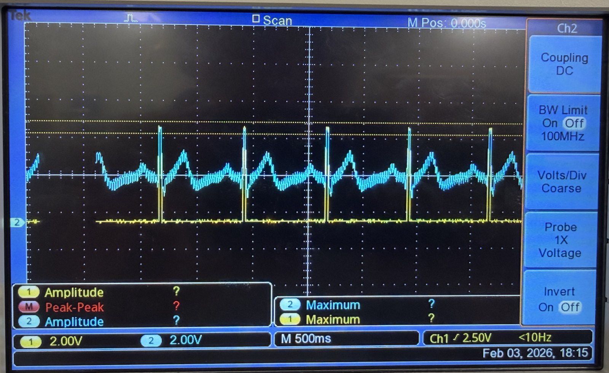
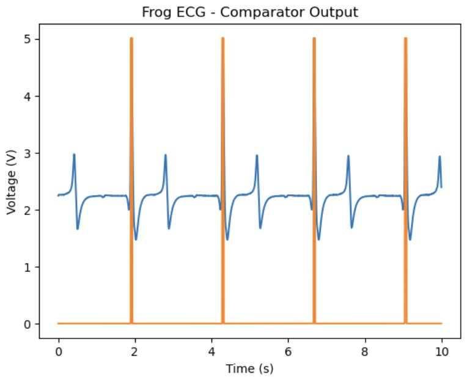
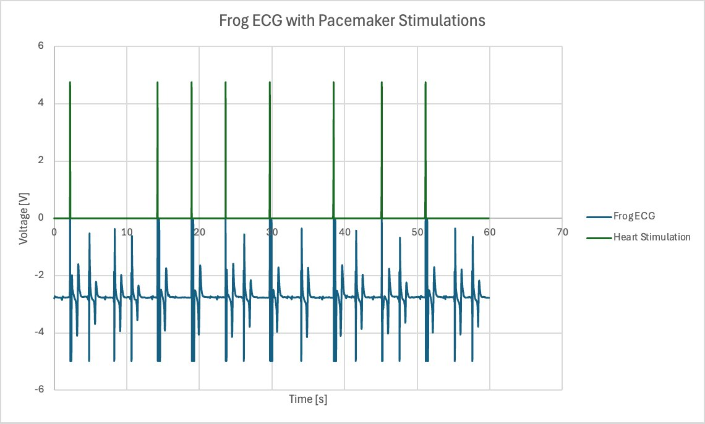

Case study · BME 354 · Spring 2026
A pacemaker that listens before it paces
A demand pacemaker prototype that reads the heart's ECG, spots each beat, and sends a pulse only when a beat is missing. A temperature sensor raises the pacing rate during activity. We tested it on a frog heart.

The problem
Sick sinus syndrome, heart block, and bradycardia leave the heart beating too slowly or skipping beats. A demand pacemaker watches for each natural beat and steps in only when one doesn't arrive in time.
Most pacemakers hold a fixed minimum rate, so a heart speeding up during exercise can look like something to correct. We added a rate response that uses blood temperature as a sign of activity.
Sense the heart's own rhythm, pace only when a beat is missing, and raise the minimum rate when the body needs more.
How it works
Signal acquisition
An AD623 instrumentation amplifier picks up the ECG between two electrodes without loading the high-impedance tissue. A bandpass filter keeps 1.9 to 53 Hz, which removes DC drift and most of the 60 Hz powerline noise. A non-inverting amplifier then adds a gain of 471.
Beat detection
A comparator with a 3.5 V reference fires only on the tall R-wave and ignores the P and T waves. The Arduino samples at 200 Hz, times the gap between R-waves, and pauses briefly after each beat so it doesn't count one beat twice.
Decide and pace
If no natural beat arrives before the timer runs out, the Arduino triggers a MOSFET that discharges a capacitor into the heart. We sized the pulse from the measured rheobase and chronaxie, with a safety margin.
Rate response
A TMP36 sensor records a baseline temperature at startup. If the temperature stays past a threshold, a smoothing function gradually raises the minimum pacing rate instead of jumping it.


My role
I led the analog circuitry. My partner and I tested the full system together on the bench and on the frog heart, and wrote the report together.
Testing and results
| Test | How we tested | Result |
|---|---|---|
| Filter cutoff | Swept sine waves near the cutoff with a function generator | Gain of 0.710 at 42 Hz, close to the 0.707 target |
| Overall gain | 3.84 mV sine wave in the passband, about the size of a real ECG | 4.56 V out, a gain of about 1,190 |
| R-wave detection | Simulated ECG, then a live frog ECG | A 5 V pulse on every QRS, with no false triggers on P or T waves Pass |
| Heart-rate accuracy | Known rates from a heartbeat simulator | Error under 1% across the full range Pass |
| Demand pacing | Frog heart, live | Paced when beats were missing and held off when the heart beat on its own Pass |


What we'd do next: combine temperature with an accelerometer or a respiration sensor for a truer read of the body's demand, and let the rate ease back down once temperature returns to baseline.